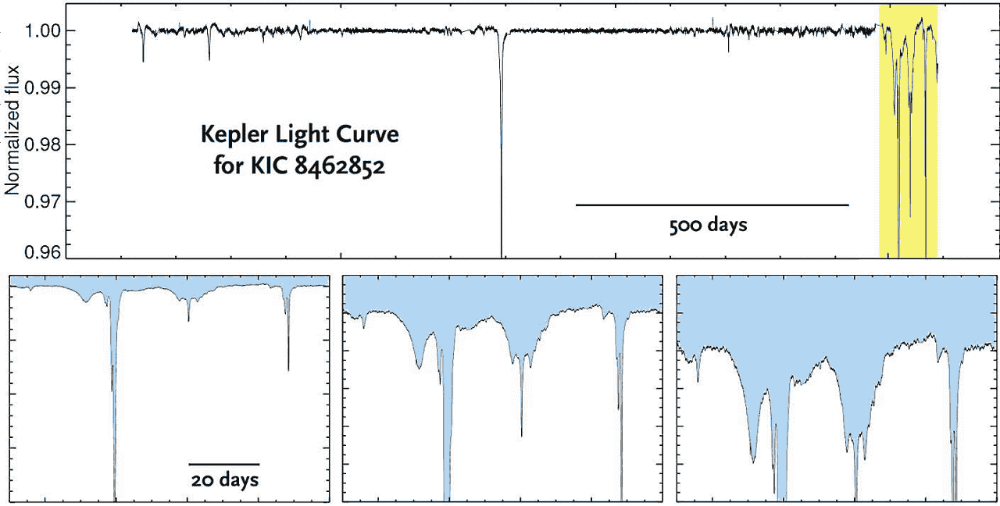

2015年9月にアメリカの天文学者、Tabetha S. Boyajian(タビー・S・ボヤジアン)がケプラー宇宙望遠鏡によって観測されたタビーの星の異常な減光について論文を発表した。ちなみにKIC 8462852Aの別名は、彼女の名前を元に命名された。
具体的に何が異常かというと、普通の恒星が減光する原因は主に一つで、恒星を公転している惑星が通り過ぎ、光を遮るというものがある。しかし、このときどんなに巨大な惑星が通り過ぎても恒星は、わずか1％しか暗くならない。一方、タビーの星は平均で15％~22％も暗くなり、恒星を22％も暗くする惑星は考えられない。そのためタビーの星を暗くしている物体について、さまざまな憶測が流れた
タビーの星の減光の原因
タビーの星の減光の原因については主に二つの説が囁かれている。
テストフリーマン・ダイソンが提唱した以下の画像のように
恒星を卵の殻のように覆ってしまう仮想上の建造物で、主な役目は恒星の発する熱や光をエネルギーに活用することである。もし一秒間に核爆弾
1兆倍のエネルギーを放出する太陽に、人間がダイソン球を造り上げる事ができれば、信じられないほど地球はエネルギーに満ち溢れている惑星になる。しかし、
現在の人間がダイソン球を太陽に設置することは不可能に近いため、これが可能になるのは、まだまだ
未来のこととなりそうだ。もしかしたら遠い宇宙にダイソン球を造り上げているほど文明が進歩しているエイリアンがいるかもしれない。
2つ目の説は、1⃣の画像のように不均一な小惑星帯がタビーの星を公転しているという説。
小惑星帯は惑星のように大きさに上限がないため、この説が最有力だと言われてる。
ちなみに、恒星を22％も暗くする小惑星帯は普通には形成されないため、岩石惑星や衛星が何かしらの
出来事（※1）によって破壊され、そのときにできた破片がそれになっていると予想されている。
（※1）何かしらの出来事については、系外衛星説というものがある。
この説では、昔タビーの星を公転していた惑星が存在したが引力によって軌道が少しつず変化していき、やがてタビーの星によって破壊されて飲み込まれた。このときに、惑星を公転していた衛星は、奇跡的に崩壊を避けられ、タビーの星の新たな惑星となって公転し始めた。しかし、この新惑星の軌道は非常に不安定だったため、前の惑星と同じようにタビーの星の引力によって破壊されてしまったという説である。
ちなみに現在まで系外衛星の発見はされていないため、もしこの説が事実だと証明されれば、系外衛星発見のヒントとなるかもしれない。
タビーの星の減光を原因を説明するタビー・S・ボヤジアン(TEDチャンネル)
